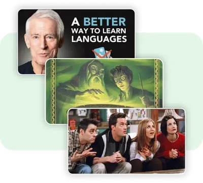
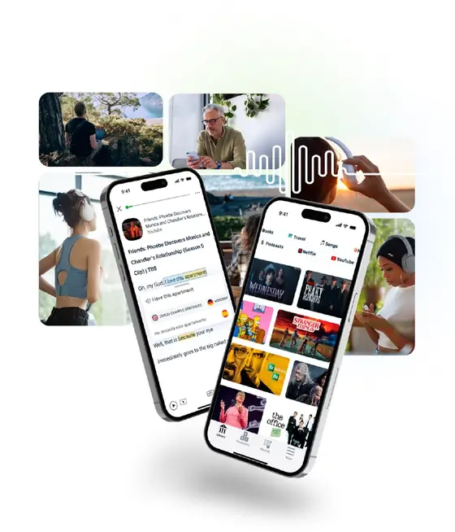
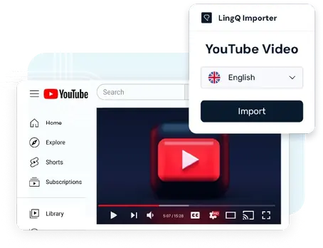

LingQ 到底怎么用？一篇快问快答帮你搞懂语言学习神器
从注册入门到标记词汇、从免费版限制到导入外部内容，整理了 7 个关于 LingQ 最常被问到的问题，看完就能上手
最近不少朋友问起 LingQ——一个用"真实内容 + SRS 间隔重复"学外语的平台。我整理一篇快问快答，把最核心的问题一次讲透。
LingQ 是什么？跟其他背单词 App 有啥不一样？
一句话：LingQ 不是背单词工具，是用你感兴趣的内容学语言的整套系统。普通背单词 App 给你一套词表让你刷，LingQ 让你打开一篇日语新闻、一集英剧脚本、一本法语小说，然后把里面你不认识的词标记出来，自动放进 SRS 复习队列。
核心逻辑来自语言学家 Steve Kaufmann 的可理解性输入理论——只有当输入内容刚好比你当前水平高一点点（i+1），大脑才能自然吸收。LingQ 做的事就是帮你在海量真实内容里找到那个"刚好够得着"的区间，然后把生词摘出来用间隔重复算法帮你记住。

谁适合用 LingQ？零基础能行吗？
零基础也能用，但要有个心理预期：LingQ 最舒服的区间是"入门之后到高级之前"的那段。完全零基础的话，建议先在别的地方把字母、发音、最基础的语法过一遍，再来 LingQ 开始啃真实内容。
如果你符合下面任意一条，LingQ 大概率适合你：
- 背单词书背到 A 开头就放弃了，想换个方式
- 喜欢看剧/听播客/读原著，但每次遇到生词就卡住
- 已经学了一段时间但感觉"输入量不够"，想系统地补
- 讨厌死记硬背，更倾向于"在语境里记住"
怎么装？Web 端和移动端都有吗？
LingQ 有 Web 端、iOS、Android 三个入口，注册和基础使用全免费，不需要绑信用卡。直接去官网注册一个账户，选好你要学的目标语言（免费版只能选 1 种，升级后可以同时学多种），进去就能看到图书馆。
Web 端功能最全，适合在电脑前认真学习、整理导入内容；移动端适合通勤路上听音频、快速复习生词，客户端安装包从下载就能拿到。数据是云端同步的——电脑上标记的 LingQ，手机上打开就在复习队列里。

打开之后第一步干什么？怎么选课？
注册完第一件事：别着急点"开始学习"，先逛一圈图书馆。图书馆按好几种方式给课程分类：难度等级（Beginner / Intermediate / Advanced）、内容类型（播客、书籍、访谈、新闻、YouTube、歌曲、短篇故事），还有一个搜索框让你按关键词找。
选第一节课程记住四条：选你真感兴趣的主题——哪怕是最简单的动漫台词，也比一篇无聊的新闻稿强；看蓝词率——点开课程后阅读器会显示蓝色生词比例，理想值是每 100 个词里有 1~5 个生词（1%~5%），超过 10% 说明太难，低于 1% 又太简单；优先选有音频的（通勤党刚需）；长度控制在 1000~3000 词、10~20 分钟音频，第一节课别贪大。
核心操作"标记 LingQ"到底怎么玩？
这是整个平台最关键的动作。在阅读器里，所有你还没见过或没记住的词会显示成蓝色。点一下蓝词，弹出释义面板——选一个翻译（也可以自己输入），点 Save LingQ，这个词就会变成黄色，自动进入 SRS 复习队列。
标记 LingQ 有几个进阶玩法值得说一下：
短语 LingQ 是我最推荐的。很多语言里固定搭配比单个词重要得多——英语的 "take advantage of"、日语的 "よろしくお願いします"、韩语的 "안녕하세요"，拆开每个词你可能都认识，但组合含义完全不一样。LingQ 支持拖选多个连续的词作为一个短语保存，SRS 复习时也是整个短语一起出，记忆效率比单独存几个词高得多。
另外两个实用功能：Mark Page as Known 一键把一页蓝词全标成已知（适合你其实都认识但数据库还没记录的情况），以及Quiz Me 快速自测——不确定一个词记没记住，点 Quiz Me 考考自己，答对了直接标已知，不用走 LingQ 流程。更细的标记技巧和批量处理方法，在LingQ文档里写得很清楚。
一个重要原则：宁缺毋滥。高频功能词（the、a、て、を）、专有名词（人名、地名、品牌名）、你完全没兴趣的主题词——这些别标。如果一个词让你觉得"这个我得记住"才创建，只是"咦这词啥意思"看完就过去的，不用存。标记太多 SRS 队列会爆，你根本消化不完。
免费版和付费版差在哪？值不值得升级？
LingQ 免费版不是试用版，是永久免费可用的账户类型，但有几处硬性限制。最核心的两个：只能保存 20 个 LingQ，以及只能导入 5 门外部课程。其他限制包括只能选 1 种目标语言、没有详细统计面板、不能离线下载、AI 功能全部锁在 Premium Plus 里。
20 个 LingQ 听起来很少，但有一种"生存策略"是创建 20 个 → SRS 走几轮 → 全部标记 Known → 再创建新的。这个循环对每天只学 10~15 分钟的轻量用户也许够用，但每天学 20+ 新词的人几乎必升级。
升级门槛的判断标准很简单——你符合下面任意一条就该掏钱了：每天标记超过 20 个新 LingQ、想导入超过 5 门课程、想同时学多种语言、想用 AI 聊天或转录功能、想离线学习。
导入外部内容怎么操作？听说还要整理？
LingQ 的强项之一是能导入几乎任何内容——YouTube 视频（带 AI 自动转录）、博客文章、PDF、电子书、Netflix 字幕，甚至直接贴纯文本。Web 端有个浏览器扩展，逛网页时点一下图标就能把当前页面抓进 LingQ，连导航栏和广告都自动过滤。
但导入不是一键完事。外部内容几乎都需要在导入后做整理：开头可能带了视频片头广告或网页标题，结尾可能有频道推荐或 footer，中间可能有重复段落——这些都要删掉。AI 转录还经常出错：同音词混淆（"wait" 变成 "weight"）、专有名词拼写错、断句碎成 10 个字一小段。好消息是这些修正直接在阅读器里点词就能改，改完自动保存。
整理的底线是够用就行。AI 转录里有 2~3 个小拼写错误？忽略。段落有 1~2 处切分不太理想？先学完再调。别在整理上花太多时间，多的时间拿来学习内容本身。

跟 Anki、多邻国这些比起来怎么选？
Anki 的优势是卡片系统完全自定义，适合准备考试（比如考研英语、JLPT）的精准记忆，但自己做卡片很费时间。多邻国 gamification 做得好，适合完全零基础入门培养兴趣，但内容深度不够，学到中级就撞墙。
LingQ 定位在两者之间：用真实内容做输入，用 SRS 做输出复习。你不需要自己做卡片（系统自动生成），但也不会被游戏化机制牵着走。如果你已经过了入门阶段、想系统地啃原著/看剧/听播客来提升，LingQ 是目前最顺手的工具之一。
最后一句：如果你已经厌倦了传统背单词的方式、想换一种更接近"自然习得"的路径，LingQ 值得从免费版开始试一周——不合适随时撤，没有任何沉没成本。这套资料我在三个代码仓库里同步维护，GitHub、Gitee 和 GitCode 上都能找到对应目录，国内访问慢的时候直接走 Gitee 或 GitCode 镜像就行。